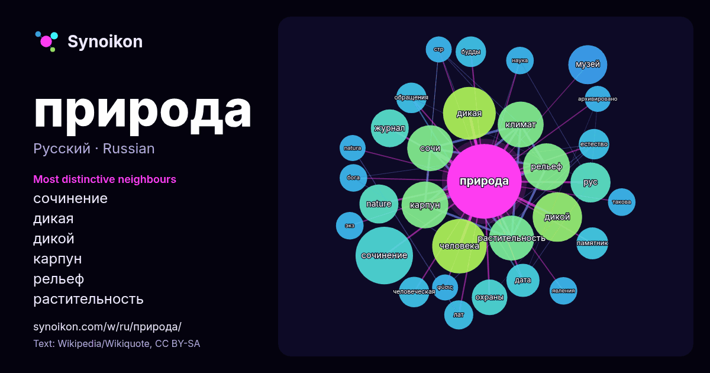

Русский · популярное слово
природа
“nature” · Слова вокруг него в 1041 вхождениях из Википедии, Wikiquote.

Самые характерные соседи
- сочинение 37×
- дикая 33×
- дикой 28×
- карпун 27×
- рельеф 25×
- растительность 24×
- сочи 23×
- рус 19×
- nature 19×
- климат 13×
- охраны 13×
- журнал 12×
- естество 12×
- человеческая 12×
- будды 12×
- дата 11×
- человека 11×
- музей 11×
- лат 11×
- обращения 11×
× = во сколько раз чаще, чем в обычном тексте Википедии.
Самые частые соседи
- сочинение 39
- человека 35
- дикая 33
- дикой 29
- карпун 26
- района 26
- рельеф 26
- климат 25
- сочи 25
- растительность 24
- является 21
- рус 19
- nature 18
- музей 18
- журнал 17
- жизни 16
- охраны 15
- дата 13
- памятник 12
- будды 11
В контексте
- Приро́да — материальный мир Вселенной, в сущности — основной объект изучения естественных наук. В быту слово «природа» часто употребляется в значении Wikipedia snippets · Природа
- Приро́да: Природа — материальный мир планеты Земля, в сущности — основной объект изучения науки. В быту слово «природа» часто употребляется в значении Wikipedia snippets · Природа (значения)
- Природа любви: Природа любви (фильм) (фр. Simple comme Sylvain) — французский кинофильм 2023 года. Природа любви (статья) — научная статья Гарри Харлоу Wikipedia snippets · Природа любви
- тексты. Он восхищается природой, восхваляет её как «плантацию Бога» и ценит одиночество (англ. solitude) на её лоне. Природа и Душа — это два компонента Wikipedia snippets · Природа (Эмерсон)
- сайт Природа Журнал Природа за 100 лет (1912—2012): Электронный архив к столетию журнала, список статей на сайте журнала. Страница журнала «Природа» на Wikipedia snippets · Природа (журнал)
- имеется малоизменённая человеком неживая природа (скалы, горы, водоёмы и т. д.). На этих участках дикая природа воспроизводится естественным путём, поддерживая Wikipedia snippets · Дикая природа
- Считается, что у обычных существ природа будды временно загрязнена клешами, создающими страдание и другие иллюзии сансары. Природа будды, согласно буддийской Wikipedia snippets · Природа будды
- «что значит быть естественным» (согласным со своей внутренней природой). Слово «природа» (натура) является калькой с латинского nātūra — философского Wikipedia snippets · Природа (понятие философии)
Другие слова
- бог
- власть
- вода
- деньги
- жизнь
- здоровье
- золото
- искусство
- истина
- история
- климат
- кошка
- мост
- наука
- пища
- поезд
- работа
- семья
- сердце
- смерть
- собака
- язык
Предварительно рассчитано 2026-10-09 с настройками по умолчанию (±5 слов, средний корпус). Интерактивная карта может обновить данные в реальном времени.
Интерфейс переведён машинно; исправления приветствуются.